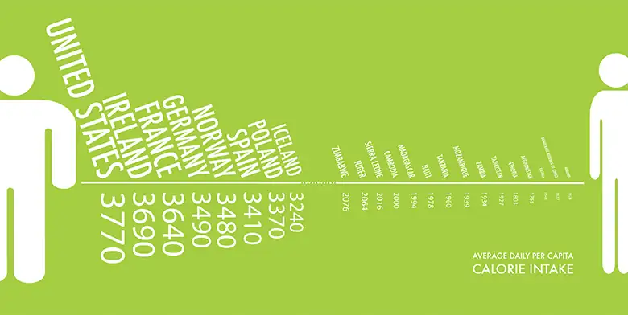
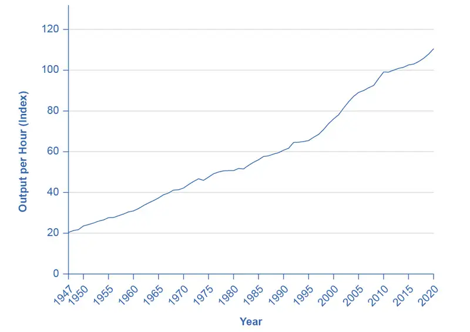
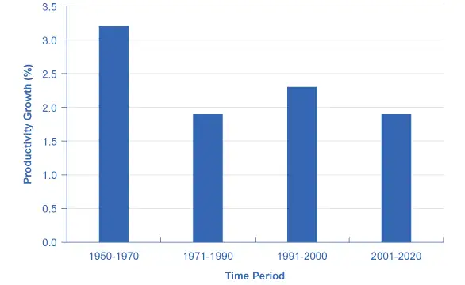
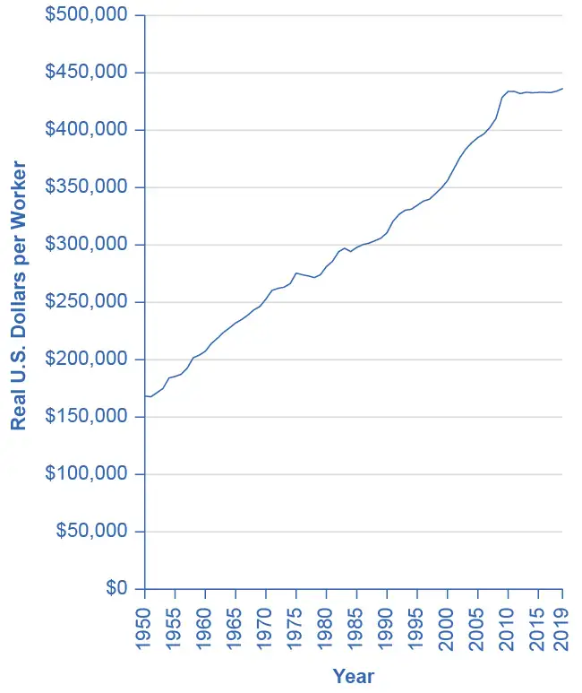
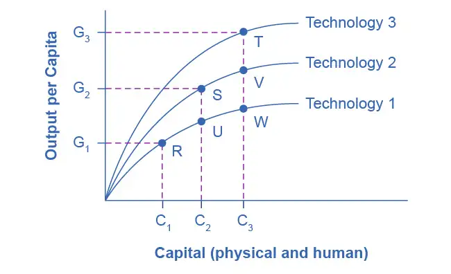

Chapter 20: Economic Growth¶
Introduction¶

Bring It Home: Calories and Economic Growth
On average, humans need about 2,500 calories a day to survive, depending on height, weight, and gender. The economist Brad DeLong estimates that the average worker in the early 1600s earned wages that could afford him 2,500 food calories. This worker lived in Western Europe. Two hundred years later, that same worker could afford 3,000 food calories. However, between 1800 and 1875, just a time span of just 75 years, economic growth was so rapid that western European workers could purchase 5,000 food calories a day. By 2012, a low skilled worker in an affluent Western European/North American country could afford to purchase 2.4 million food calories per day.
What caused such a rapid rise in living standards between 1800 and 1875 and thereafter? Why is it that many countries, especially those in Western Europe, North America, and parts of East Asia, can feed their populations more than adequately, while others cannot? We will look at these and other questions as we examine long-run economic growth.
Chapter Outline: Introduction to Economic Growth
In this chapter, you will learn about:
- The Relatively Recent Arrival of Economic Growth
- Labor Productivity and Economic Growth
- Components of Economic Growth
- Economic Convergence
Every country worries about economic growth. In the United States and other high-income countries, the question is whether economic growth continues to provide the same remarkable gains in our standard of living as it did during the twentieth century. Meanwhile, can middle-income countries like Brazil, Egypt, or Poland catch up to the higher-income countries, or must they remain in the second tier of per capita income? Of the world’s population of roughly 7.5 billion people, about 1.1 billion are scraping by on incomes that average less than $2 per day, not that different from the standard of living 2,000 years ago. Can the world’s poor be lifted from their fearful poverty? As the 1995 Nobel laureate in economics, Robert E. Lucas Jr., once noted: “The consequences for human welfare involved in questions like these are simply staggering: Once one starts to think about them, it is hard to think about anything else.”
Dramatic improvements in a nation’s standard of living are possible. After the Korean War in the late 1950s, the Republic of Korea, often called South Korea, was one of the poorest economies in the world. Most South Koreans worked in peasant agriculture. According to the British economist Angus Maddison, who devoted life’s work to measuring GDP and population in the world economy, GDP per capita in 1990 international dollars was $854 per year. From the 1960s to the early twenty-first century, a time period well within the lifetime and memory of many adults, the South Korean economy grew rapidly. Over these four decades, GDP per capita increased by more than 6% per year. According to the World Bank, GDP for South Korea now exceeds $30,000 in nominal terms, placing it firmly among high-income countries like Italy, New Zealand, and Israel. Measured by total GDP in 2015, South Korea is the eleventh-largest economy in the world. For a nation of 50 million people, this transformation is extraordinary.
South Korea is a standout example, but it is not the only case of rapid and sustained economic growth. Other East Asian nations, like Thailand and Indonesia, have seen very rapid growth as well. China has grown enormously since it enacted market-oriented economic reforms around 1980. GDP per capita in high-income economies like the United States also has grown dramatically albeit over a longer time frame. Since the Civil War, the U.S. economy has transformed from a primarily rural and agricultural economy to an economy based on services, manufacturing, and technology.
20.1 The Relatively Recent Arrival of Economic Growth¶
Learning Objectives
By the end of this section, you will be able to:
- Explain the conditions that have allowed for modern economic growth in the last two centuries
- Analyze the influence of public policies on an economy's long-run economic growth
Let’s begin with a brief overview of spectacular economic growth patterns around the world in the last two centuries. We commonly refer to this as the period of modern economic growth. (Later in the chapter we will discuss lower economic growth rates and some key ingredients for economic progress.) Rapid and sustained economic growth is a relatively recent experience for the human race. Before the last two centuries, although rulers, nobles, and conquerors could afford some extravagances and although economies rose above the subsistence level, the average person’s standard of living had not changed much for centuries.
Progressive, powerful economic and institutional changes started to have a significant effect in the late eighteenth and early nineteenth centuries. According to the Dutch economic historian Jan Luiten van Zanden, slavery-based societies, favorable demographics, global trading routes, and standardized trading institutions that spread with different empires set the stage for the Industrial Revolution to succeed. The Industrial Revolution refers to the widespread use of power-driven machinery and the economic and social changes that resulted in the first half of the 1800s. Ingenious machines—the steam engine, the power loom, and the steam locomotive—performed tasks that otherwise would have taken vast numbers of workers to do. The Industrial Revolution began in Great Britain, and soon spread to the United States, Germany, and other countries.
The jobs for ordinary people working with these machines were often dirty and dangerous by modern standards, but the alternative jobs of that time in peasant agriculture and small-village industry were often dirty and dangerous, too. The new jobs of the Industrial Revolution typically offered higher pay and a chance for social mobility. A self-reinforcing cycle began: New inventions and investments generated profits, the profits provided funds for more new investment and inventions, and the investments and inventions provided opportunities for further profits. Slowly, a group of national economies in Europe and North America emerged from centuries of sluggishness into a period of rapid modern growth. During the last two centuries, the average GDP growth rate per capita in the leading industrialized countries has been about 2% per year. What were times like before then? Read the following Clear It Up feature for the answer.
Clear It Up: What were economic conditions like before 1870?
Angus Maddison, a quantitative economic historian, led the most systematic inquiry into national incomes before 1870. Economists recently have refined and used his methods to compile GDP per capita estimates from year 1 C.E. to 1348. Table 20.1 is an important counterpoint to most of the narrative in this chapter. It shows that nations can decline as well as rise. A wide array of forces, such as epidemics, natural and weather-related disasters, the inability to govern large empires, and the remarkably slow pace of technological and institutional progress explain declines in income. Institutions are the traditions and laws by which people in a community agree to behave and govern themselves. Such institutions include marriage, religion, education, and laws of governance. Institutional progress is the development and codification of these institutions to reinforce social order, and thus, economic growth.
One example of such an institution is the Magna Carta (Great Charter), which the English nobles forced King John to sign in 1215. The Magna Carta codified the principles of due process, whereby a free man could not be penalized unless his peers had made a lawful judgment against him. The United States in its own constitution later adopted this concept. This social order may have contributed to England’s GDP per capita in 1348, which was second to that of northern Italy.
In studying economic growth, a country’s institutional framework plays a critical role. Table 20.1 also shows relative global equality for almost 1,300 years. After this, we begin to see significant divergence in income (not in the table).
Table 20.1 GDP Per Capita Estimates in Current International Dollars from AD 1 to 1348 (Source: Bolt and van Zanden. “The First Update of the Maddison Project. Re-Estimating Growth Before 1820.” 2013)
| Year | Northern Italy | Spain | England | Holland | Byzantium | Iraq | Egypt | Japan |
|---|---|---|---|---|---|---|---|---|
| 1 | $800 | $600 | $600 | $600 | $700 | $700 | $700 | - |
| 730 | - | - | - | - | - | $920 | $730 | $402 |
| 1000 | - | - | - | - | $600 | $820 | $600 | - |
| 1150 | - | - | - | - | $580 | $680 | $660 | $520 |
| 1280 | - | - | - | - | - | - | $670 | $527 |
| 1300 | $1,588 | $864 | $892 | - | - | - | $610 | - |
| 1348 | $1,486 | $907 | $919 | - | - | - | - | - |
Another fascinating and underreported fact is the high levels of income, compared to others at that time, attained by the Islamic Empire Abbasid Caliphate—which was founded in present-day Iraq in 730 C.E. At its height, the empire spanned large regions of the Middle East, North Africa, and Spain until its gradual decline over 200 years.
The Industrial Revolution led to increasing inequality among nations. Some economies took off, whereas others, like many of those in Africa or Asia, remained close to a subsistence standard of living. General calculations show that the 17 countries of the world with the most-developed economies had, on average, 2.4 times the GDP per capita of the world’s poorest economies in 1870. By 1960, the most developed economies had 4.2 times the GDP per capita of the poorest economies.
However, by the middle of the twentieth century, some countries had shown that catching up was possible. Japan’s economic growth took off in the 1960s and 1970s, with a growth rate of real GDP per capita averaging 11% per year during those decades. Certain countries in Latin America experienced a boom in economic growth in the 1960s as well. In Brazil, for example, GDP per capita expanded by an average annual rate of 11.1% from 1968 to 1973. In the 1970s, some East Asian economies, including South Korea, Thailand, and Taiwan, saw rapid growth. In these countries, growth rates of 11% to 12% per year in GDP per capita were not uncommon. More recently, China, with its population of nearly 1.4 billion people, grew at a per capita rate 9% per year from 1984 into the 2000s and still average high rates of growth (more than 5% today). India, with a population of 1.4 billion, has shown promising signs of economic growth, with growth in GDP per capita of about 4% per year during the 1990s and climbing toward 7% to 8% per year in the 2000s and 2010s.
Link It Up
Visit this website to read about the Asian Development Bank.
These waves of catch-up economic growth have not reached all shores. In certain African countries like Niger, Tanzania, and Sudan, for example, GDP per capita at the start of the 2000s was still less than $300, not much higher than it was in the nineteenth century and for centuries before that. In the context of the overall situation of low-income people around the world, the good economic news from China (population: 1.4 billion) and India (population: 1.3 billion) is, nonetheless, astounding and heartening.
Economic growth in the last two centuries has made a striking change in the human condition. Richard Easterlin, an economist at the University of Southern California, wrote in 2000:
By many measures, a revolution in the human condition is sweeping the world. Most people today are better fed, clothed, and housed than their predecessors two centuries ago. They are healthier, live longer, and are better educated. Women’s lives are less centered on reproduction and political democracy has gained a foothold. Although Western Europe and its offshoots have been the leaders of this advance, most of the less developed nations have joined in during the 20th century, with the newly emerging nations of sub-Saharan Africa the latest to participate. Although the picture is not one of universal progress, it is the greatest advance in the human condition of the world’s population ever achieved in such a brief span of time.
Rule of Law and Economic Growth¶
Economic growth depends on many factors. Key among those factors is adherence to the rule of law and protection of property rights and contractual rights by a country’s government so that markets can work effectively and efficiently. Laws must be clear, public, fair, enforced, and equally applicable to all members of society. Property rights, as you might recall from Environmental Protection and Negative Externalities are the rights of individuals and firms to own property and use it as they see fit. If you have $100, you have the right to use that money, whether you spend it, lend it, or keep it in a jar. It is your property. The definition of property includes physical property as well as the right to your training and experience, especially since your training is what determines your livelihood. Using this property includes the right to enter into contracts with other parties with your property. Individuals or firms must own the property to enter into a contract.
Contractual rights, then, are based on property rights and they allow individuals to enter into agreements with others regarding the use of their property providing recourse through the legal system in the event of noncompliance. One example is the employment agreement: a skilled surgeon operates on an ill person and expects payment. Failure to pay would constitute property theft by the patient. The theft is property the services that the surgeon provided. In a society with strong property rights and contractual rights, the terms of the patient–surgeon contract will be fulfilled, because the surgeon would have recourse through the court system to extract payment from that individual. Without a legal system that enforces contracts, people would not be likely to enter into contracts for current or future services because of the risk of non-payment. This would make it difficult to transact business and would slow economic growth.
The World Bank considers a country’s legal system effective if it upholds property rights and contractual rights. The World Bank has developed a ranking system for countries’ legal systems based on effective protection of property rights and rule-based governance using a scale from 1 to 6, with 1 being the lowest and 6 the highest rating. In 2020, the world average ranking was 2.9. The three countries with the lowest ranking of 1.0 were Somalia and Eritrea, with South Sudan at 1.5. Their GDP per capita was $875, $1,625, and $1,234.70 respectively. The World Bank also cites Afghanistan (GDP per capita $2,087.60) as having a low standard of living, weak government structure, and lack of adherence to the rule of law, which has stymied its economic growth. The landlocked Central African Republic (GDP per capita $979.60) has poor economic resources as well as political instability and is a source of children used in human trafficking. Zimbabwe (GDP per capita $2,895.40) has had declining and often negative growth for much of the period since 1998. Land redistribution and price controls have disrupted the economy, and corruption and violence have dominated the political process. Although global economic growth has increased, those countries lacking a clear system of property rights and an independent court system free from corruption have lagged far behind.
20.2 Labor Productivity and Economic Growth¶
Learning Objectives
By the end of this section, you will be able to:
- Identify the role of labor productivity in promoting economic growth
- Analyze the sources of economic growth using the aggregate production function
- Measure an economy’s rate of productivity growth
- Evaluate the power of sustained growth
Sustained long-term economic growth comes from increases in worker productivity, which essentially means how well we do things. In other words, how efficient is your nation with its time and workers? Labor productivity is the value that each employed person creates per unit of their input. The easiest way to comprehend labor productivity is to imagine a Canadian worker who can make 10 loaves of bread in an hour versus a U.S. worker who in the same hour can make only two loaves of bread. In this fictional example, the Canadians are more productive. More productivity essentially means you can do more in the same amount of time. This in turn frees up resources for workers to use elsewhere.
What determines how productive workers are? The answer is pretty intuitive. The first determinant of labor productivity is human capital. Human capital is the accumulated knowledge (from education and experience), skills, and expertise that the average worker in an economy possesses. Typically the higher the average level of education in an economy, the higher the accumulated human capital and the higher the labor productivity.
The second factor that determines labor productivity is technological change. Technological change is a combination of invention—advances in knowledge—and innovation, which is putting those advances to use in a new product or service. For example, the transistor was invented in 1947. It allowed us to miniaturize the footprint of electronic devices and use less power than the tube technology that came before it. Innovations since then have produced smaller and better transistors that are ubiquitous in products as varied as smart-phones, computers, and escalators. Developing the transistor has allowed workers to be anywhere with smaller devices. People can use these devices to communicate with other workers, measure product quality or do any other task in less time, improving worker productivity.
The third factor that determines labor productivity is economies of scale. Recall that economies of scale are the cost advantages that industries obtain due to size. (Read more about economies of scale in Production, Cost and Industry Structure.) Consider again the case of the fictional Canadian worker who could produce 10 loaves of bread in an hour. If this difference in productivity was due only to economies of scale, it could be that the Canadian worker had access to a large industrial-size oven while the U.S. worker was using a standard residential size oven.
Now that we have explored the determinants of worker productivity, let’s turn to how economists measure economic growth and productivity.
Sources of Economic Growth: The Aggregate Production Function¶
To analyze the sources of economic growth, it is useful to think about a production function, which is the technical relationship by which economic inputs like labor, machinery, and raw materials are turned into outputs like goods and services that consumers use. A microeconomic production function describes a firm's or perhaps an industry's inputs and outputs. In macroeconomics, we call the connection from inputs to outputs for the entire economy an aggregate production function.
Components of the Aggregate Production Function¶
Economists construct different production functions depending on the focus of their studies. Figure 20.2 presents two examples of aggregate production functions. In the first production function in Figure 20.2 (a), the output is GDP. The inputs in this example are workforce, human capital, physical capital, and technology. We discuss these inputs further in the module, Components of Economic Growth.

Measuring Productivity¶
An economy’s rate of productivity growth is closely linked to the growth rate of its GDP per capita, although the two are not identical. For example, if the percentage of the population who holds jobs in an economy increases, GDP per capita will increase but the productivity of individual workers may not be affected. Over the long term, the only way that GDP per capita can grow continually is if the productivity of the average worker rises or if there are complementary increases in capital.
A common measure of U.S. productivity per worker is dollar value per hour the worker contributes to the employer’s output. This measure excludes government workers, because their output is not sold in the market and so their productivity is hard to measure. It also excludes farming, which accounts for only a relatively small share of the U.S. economy. Figure 20.3 shows an index of output per hour, with 2012 as the base year (when the index equals 100). The index equaled 110.5 in 2020. In 1977, the index equaled about 50, which shows that workers have more than doubled their productivity since then.

A graph has an X-axis with years progressing from 1955 to 2020 and a Y axis labeled Percent Change at Annual Rate. The graphed data moves up and down across a zero line indicating change year over year. In 1970, 1974, 1981, 1983, 2008, and 2020, the rate was quite low, as the U.S. was undergoing recessions.
According to the Department of Labor, U.S. productivity growth was fairly strong in the 1950s but then declined in the 1970s and 1980s before rising again in the second half of the 1990s and the first half of the 2000s. In fact, the rate of productivity measured by the change in output per hour worked averaged 2.8% per year from 1947 to 1973; dropped to 1.2% per year from 1973 to 1979; increased to 1.5% per year from 1979 to 1990; increased again to 2.2% from 1990 to 2000; increased even more to 2.7% from 2000 to 2007; and then decreased to 1.4% from 2007 to 2020 Figure 20.4 shows average annual rates of productivity growth averaged over time since 1947.

The “New Economy” Controversy¶
In recent years a controversy has been brewing among economists about the resurgence of U.S. productivity in the second half of the 1990s. One school of thought argues that the United States had developed a “new economy” based on the extraordinary advances in communications and information technology of the 1990s. The most optimistic proponents argue that it would generate higher average productivity growth for decades to come. The pessimists, alternatively, argue that even five or ten years of stronger productivity growth does not prove that higher productivity will last for the long term. It is hard to infer anything about long-term productivity trends during the later part of the 2000s, because the steep 2008-2009 recession, with its sharp but not completely synchronized declines in output and employment, complicates any interpretation. While productivity growth was high in 2009 and 2010 (around 3%), it has slowed down over the last decade.
Productivity growth is also closely linked to the average level of wages. Over time, the amount that firms are willing to pay workers will depend on the value of the output those workers produce. If a few employers tried to pay their workers less than what those workers produced, then those workers would receive offers of higher wages from other profit-seeking employers. If a few employers mistakenly paid their workers more than what those workers produced, those employers would soon end up with losses. In the long run, productivity per hour is the most important determinant of the average wage level in any economy. To learn how to compare economies in this regard, follow the steps in the following Work It Out feature.
Work It Out: Comparing the Economies of Two Countries
The Organization for Economic Co-operation and Development (OECD) tracks data on the annual growth rate of real GDP per hour worked. You can find these data on the OECD data webpage “Growth in GDP per capita, productivity and ULC” at this website.
Step 1. Visit the OECD website given above and select two countries to compare.
Step 2. On the drop-down menu “Subject,” select “ GDP per capita, constant prices,” and under “Measure,” select “Annual growth/change.” Then record the data for the countries you have chosen for the five most recent years.
Step 3. Go back to the drop-down “Subject” menu and select “GDP per hour worked, constant prices,” and under “Measure” again select “Annual growth/change.” Select data for the same years for which you selected GDP per capita data.
Step 4. Compare real GDP growth for both countries. Table 20.2 provides an example of a comparison between Australia and Belgium.
Table 20.2
| Australia | 2011 | 2012 | 2013 | 2014 | 2015 |
| Real GDP/Capita Growth (%) | 2.3% | 1.5% | 1.3% | 1.4 | 0.1% |
| Real GDP Growth/Hours Worked (%) | 1.7% | −0.1% | 1.4% | 2.2% | −0.2% |
| Belgium | 2011 | 2012 | 2013 | 2014 | 2015 |
| Real GDP/Capita Growth (%) | 0.9 | −0.6 | −0.5 | 1.2 | 1.0 |
| Real GDP Growth/Hours Worked (%) | −0.5 | −0.3 | 0.4 | 1.4 | 0.9 |
Step 5. For both measures, growth in Australia is greater than growth in Belgium for the first four years. In addition, there are year-to-year fluctuations. Many factors can affect growth. For example, one factor that may have contributed to Australia's stronger growth may be its larger inflows of immigrants, who generally contribute to economic growth.
The Power of Sustained Economic Growth¶
Nothing is more important for people’s standard of living than sustained economic growth. Even small changes in the rate of growth, when sustained and compounded over long periods of time, make an enormous difference in the standard of living. Consider Table 20.3, in which the rows of the table show several different rates of growth in GDP per capita and the columns show different periods of time. Assume for simplicity that an economy starts with a GDP per capita of 100. The table then applies the following formula to calculate what GDP will be at the given growth rate in the future:
For example, an economy that starts with a GDP of 100 and grows at 3% per year will reach a GDP of 209 after 25 years; that is, 100 (1.03)25 = 209.
The slowest rate of GDP per capita growth in the table, just 1% per year, is similar to what the United States experienced during its weakest years of productivity growth. The second highest rate, 3% per year, is close to what the U.S. economy experienced during the strong economy of the late 1990s and into the 2000s. Higher rates of per capita growth, such as 5% or 8% per year, represent the experience of rapid growth in economies like Japan, Korea, and China.
Table 20.3 shows that even a few percentage points of difference in economic growth rates will have a profound effect if sustained and compounded over time. For example, an economy growing at a 1% annual rate over 50 years will see its GDP per capita rise by a total of 64%, from 100 to 164 in this example. However, a country growing at a 5% annual rate will see (almost) the same amount of growth—from 100 to 163—over just 10 years. Rapid rates of economic growth can bring profound transformation. (See the following Clear It Up feature on the relationship between compound growth rates and compound interest rates.) If the rate of growth is 8%, young adults starting at age 20 will see the average standard of living in their country more than double by the time they reach age 30, and grow more than sixfold by the time they reach age 45.
Table 20.3 Growth of GDP over Different Time Horizons
| Growth Rate | Value of an original 100 in 10 Years | Value of an original 100 in 25 Years | Value of an original 100 in 50 Years |
|---|---|---|---|
| 1% | 110 | 128 | 164 |
| 3% | 134 | 209 | 438 |
| 5% | 163 | 339 | 1,147 |
| 8% | 216 | 685 | 4,690 |
Clear It Up: How are compound growth rates and compound interest rates related?
The formula for GDP growth rates over different periods of time, as Figure 20.3 shows, is exactly the same as the formula for how a given amount of financial savings grows at a certain interest rate over time, as presented in Choice in a World of Scarcity. Both formulas have the same ingredients:
- an original starting amount, in one case GDP and in the other case an amount of financial saving;
- a percentage increase over time, in one case the GDP growth rate and in the other case an interest rate;
- and an amount of time over which this effect happens.
Recall that compound interest is interest that is earned on past interest. It causes the total amount of financial savings to grow dramatically over time. Similarly, compound rates of economic growth, or the compound growth rate, means that we multiply the rate of growth by a base that includes past GDP growth, with dramatic effects over time.
For example, in 2020, the Central Intelligence Agency's World Fact Book reported that South Korea had a GDP of $2.2 trillion. With a growth rate of 2.8% per year, South Korea's GDP will be $2.5 trillion in five years. If we apply the growth rate to each year’s ending GDP for the next five years, we will calculate that at the end of year one, GDP is $2.3 trillion. In year two, we start with the end-of-year one value of $2.3 trillion and increase it by 2.8%. Year three starts with the end-of-year two GDP, and we increase it by 2.8% and so on, as Table 20.4 depicts.
Table 20.4
| Year | Starting GDP | Growth Rate 2.8% | Year-End Amount |
|---|---|---|---|
| 1 | $2.2 Trillion × | (1+0.028) | $2.26 Trillion |
| 2 | $2.3 Trillion × | (1+0.028) | $2.32 Trillion |
| 3 | $2.3 Trillion × | (1+0.028) | $2.38 Trillion |
| 4 | $2.4 Trillion × | (1+0.028) | $2.44 Trillion |
| 5 | $2.5 Trillion × | (1+0.028) | $2.50 Trillion |
Another way to calculate the growth rate is to apply the following formula:
Where “future value” is the value of GDP five years hence, “present value” is the starting GDP amount of $2.2 trillion, “g” is the growth rate of 2.8%, and “n” is the number of periods for which we are calculating growth.
20.3 Components of Economic Growth¶
Learning Objectives
By the end of this section, you will be able to:
- Discuss the components of economic growth, including physical capital, human capital, and technology
- Explain capital deepening and its significance
- Analyze the methods employed in economic growth accounting studies
- Identify factors that contribute to a healthy climate for economic growth
Over decades and generations, seemingly small differences of a few percentage points in the annual rate of economic growth make an enormous difference in GDP per capita. In this module, we discuss some of the components of economic growth, including physical capital, human capital, and technology.
The category of physical capital includes the plant and equipment that firms use as well as things like roads (also called infrastructure). Again, greater physical capital implies more output. Physical capital can affect productivity in two ways: (1) an increase in the quantity of physical capital (for example, more computers of the same quality); and (2) an increase in the quality of physical capital (same number of computers but the computers are faster, and so on). Human capital refers to the skills and knowledge that make workers productive. Human capital and physical capital accumulation are similar: In both cases, investment now pays off in higher productivity in the future.
The category of technology is the “joker in the deck.” Earlier we described it as the combination of invention and innovation. When most people think of new technology, the invention of new products like the laser, the smartphone, or some new wonder drug come to mind. In food production, developing more drought-resistant seeds is another example of technology. Technology, as economists use the term, however, includes still more. It includes new ways of organizing work, like the invention of the assembly line, new methods for ensuring better quality of output in factories, and innovative institutions that facilitate the process of converting inputs into output. In short, technology comprises all the advances that make the existing machines and other inputs produce more, and at higher quality, as well as altogether new products.
It may not make sense to compare the GDPs of China and say, Benin, simply because of the great difference in population size. To understand economic growth, which is really concerned with the growth in living standards of an average person, it is often useful to focus on GDP per capita. Using GDP per capita also makes it easier to compare countries with smaller numbers of people, like Belgium, Uruguay, or Zimbabwe, with countries that have larger populations, like the United States, the Russian Federation, or Nigeria.
To obtain a per capita production function, divide each input in Figure 20.2(a) by the population. This creates a second aggregate production function where the output is GDP per capita (that is, GDP divided by population). The inputs are the average level of human capital per person, the average level of physical capital per person, and the level of technology per person—see Figure 20.2(b). The result of having population in the denominator is mathematically appealing. Increases in population lower per capita income. However, increasing population is important for the average person only if the rate of income growth exceeds population growth. A more important reason for constructing a per capita production function is to understand the contribution of human and physical capital.
Capital Deepening¶
When society increases the level of capital per person, we call the result capital deepening. The idea of capital deepening can apply both to additional human capital per worker and to additional physical capital per worker.
Recall that one way to measure human capital is to look at the average levels of education in an economy. Figure 20.5 illustrates the human capital deepening for U.S. workers by showing that the proportion of the U.S. population with a high school and a college degree is rising. As recently as 1970, for example, only about half of U.S. adults had at least a high school diploma. By the start of the twenty-first century, more than 80% of adults had graduated from high school. The idea of human capital deepening also applies to the years of experience that workers have, but the average experience level of U.S. workers has not changed much in recent decades. Thus, the key dimension for deepening human capital in the U.S. economy focuses more on additional education and training than on a higher average level of work experience.
![This is a graph illustrating two lines: the rate of completing a high school education over time and the rate of completing a college education or more over time. The y-axis measures the completion rate for people 25 and over, as a percent, from 0 to 100, in 10 percent increments. The x-axis measures time, from 1960 to 2020. The high school completion rate line is above the college completion or more rate line. In 1960, the high school completion rate begins at 61 percent and increases to 85 percent in 1980, then it is generally flat until 2000, when it increases again, with a slight decrease in 2005, to around 94 percent in 2020. In 1960, the college completion or more rate begins at 11 percent and increases to around 20 percent in 2000, then it is generally flat until 2005, when it increases again, to around 40 percent in 2020.](img/cnx-econ3e-c20-010.webp)
Figure 20.6 shows physical capital deepening in the U.S. economy. The average U.S. worker in the late 2000s was working with physical capital worth almost three times as much as that of the average worker of the early 1950s.

Not only does the current U.S. economy have better-educated workers with more and improved physical capital than it did several decades ago, but these workers have access to more advanced technologies. Growth in technology is impossible to measure with a simple line on a graph, but evidence that we live in an age of technological marvels is all around us—discoveries in genetics and in the structure of particles, the wireless internet, and other inventions almost too numerous to count. The U.S. Patent and Trademark Office typically has issued more than 150,000 patents annually in recent years.
This recipe for economic growth—investing in labor productivity, with investments in human capital and technology, as well as increasing physical capital—also applies to other economies. South Korea, for example, already achieved universal enrollment in primary school (the equivalent of kindergarten through sixth grade in the United States) by 1965, when Korea’s GDP per capita was still near its rock bottom low. By the late 1980s, Korea had achieved almost universal secondary school education (the equivalent of a high school education in the United States). With regard to physical capital, Korea’s rates of investment had been about 15% of GDP at the start of the 1960s, but doubled to 30–35% of GDP by the late 1960s and early 1970s. With regard to technology, South Korean students went to universities and colleges around the world to obtain scientific and technical training, and South Korean firms reached out to study and form partnerships with firms that could offer them technological insights. These factors combined to foster South Korea’s high rate of economic growth.
Growth Accounting Studies¶
Since the late 1950s, economists have conducted growth accounting studies to determine the extent to which physical and human capital deepening and technology have contributed to growth. The usual approach uses an aggregate production function to estimate how much of per capita economic growth can be attributed to growth in physical capital and human capital. We can measure these two inputs at least roughly. The part of growth that is unexplained by measured inputs, called the residual, is then attributed to growth in technology. The exact numerical estimates differ from study to study and from country to country, depending on how researchers measured these three main factors and over what time horizons. For studies of the U.S. economy, three lessons commonly emerge from growth accounting studies.
First, technology is typically the most important contributor to U.S. economic growth. Growth in human capital and physical capital often explains only half or less than half of the economic growth that occurs. New ways of doing things are tremendously important.
Second, while investment in physical capital is essential to growth in labor productivity and GDP per capita, building human capital is at least as important. Economic growth is not just a matter of more machines and buildings. One vivid example of the power of human capital and technological knowledge occurred in Europe in the years after World War II (1939–1945). During the war, a large share of Europe’s physical capital, such as factories, roads, and vehicles, was destroyed. Europe also lost an overwhelming amount of human capital in the form of millions of men, women, and children who died during the war. However, the powerful combination of skilled workers and technological knowledge, working within a market-oriented economic framework, rebuilt Europe’s productive capacity to an even higher level within less than two decades.
A third lesson is that these three factors of human capital, physical capital, and technology work together. Workers with a higher level of education and skills are often better at coming up with new technological innovations. These technological innovations are often ideas that cannot increase production until they become a part of new investment in physical capital. New machines that embody technological innovations often require additional training, which builds worker skills further. If the recipe for economic growth is to succeed, an economy needs all the ingredients of the aggregate production function. See the following Clear It Up feature for an example of how human capital, physical capital, and technology can combine to significantly impact lives.
Clear It Up: How do girls’ education and economic growth relate in low-income countries?
In the early 2000s, according to the World Bank, about 110 million children between the ages of 6 and 11 were not in school—and about two-thirds of them were girls. In Afghanistan, for example, the literacy rate for those aged 15-24 for the period 2005-2014 was 62% for males and only 32% for females. In Benin, in West Africa, it was 55% for males and 31% for females. In Nigeria, Africa’s most populous country, it was 76% for males and 58 percent for females.
Whenever any child does not receive a basic education, it is both a human and an economic loss. In low-income countries, wages typically increase by an average of 10 to 20% with each additional year of education. There is, however, some intriguing evidence that helping girls in low-income countries to close the education gap with boys may be especially important, because of the social role that many of the girls will play as mothers and homemakers.
Girls in low-income countries who receive more education tend to grow up to have fewer, healthier, better-educated children. Their children are more likely to be better nourished and to receive basic health care like immunizations. Economic research on women in low-income economies backs up these findings. When 20 women obtain one additional year of schooling, as a group they will, on average, have one less child. When 1,000 women obtain one additional year of schooling, on average one to two fewer women from that group will die in childbirth. When a woman stays in school an additional year, that factor alone means that, on average, each of her children will spend an additional half-year in school. Education for girls is a good investment because it is an investment in economic growth with benefits beyond the current generation.
A Healthy Climate for Economic Growth¶
While physical and human capital deepening and better technology are important, equally important to a nation’s well-being is the climate or system within which these inputs are cultivated. Both the type of market economy and a legal system that governs and sustains property rights and contractual rights are important contributors to a healthy economic climate.
A healthy economic climate usually involves some sort of market orientation at the microeconomic, individual, or firm decision-making level. Markets that allow personal and business rewards and incentives for increasing human and physical capital encourage overall macroeconomic growth. For example, when workers participate in a competitive and well-functioning labor market, they have an incentive to acquire additional human capital, because additional education and skills will pay off in higher wages. Firms have an incentive to invest in physical capital and in training workers, because they expect to earn higher profits for their shareholders. Both individuals and firms look for new technologies, because even small inventions can make work easier or lead to product improvement. Collectively, such individual and business decisions made within a market structure add up to macroeconomic growth. Much of the rapid growth since the late nineteenth century has come from harnessing the power of competitive markets to allocate resources. This market orientation typically reaches beyond national borders and includes openness to international trade.
A general orientation toward markets does not rule out important roles for government. There are times when markets fail to allocate capital or technology in a manner that provides the greatest benefit for society as a whole. The government's role is to correct these failures. In addition, government can guide or influence markets toward certain outcomes. The following examples highlight some important areas that governments around the world have chosen to invest in to facilitate capital deepening and technology:
- Education. The Danish government requires all children under 16 to attend school. They can choose to attend a public school (Folkeskole) or a private school. Students do not pay tuition to attend Folkeskole. Thirteen percent of primary/secondary (elementary/high) school is private, and the government supplies vouchers to citizens who choose private school.
- Savings and Investment. In the United States, as in other countries, the government taxes gains from private investment. Low capital gains taxes encourage investment and so also economic growth.
- Infrastructure. The Japanese government in the mid-1990s undertook significant infrastructure projects to improve roads and public works. This in turn increased the stock of physical capital and ultimately economic growth.
- Special Economic Zones. The island of Mauritius is one of the few African nations to encourage international trade in government-supported special economic zones (SEZ). These are areas of the country, usually with access to a port where, among other benefits, the government does not tax trade. As a result of its SEZ, Mauritius has enjoyed above-average economic growth since the 1980s. Free trade does not have to occur in an SEZ however. Governments can encourage international trade across the board, or surrender to protectionism.
- Scientific Research. The European Union has strong programs to invest in scientific research. The researchers Abraham García and Pierre Mohnen demonstrate that firms which received support from the Austrian government actually increased their research intensity and had more sales. Governments can support scientific research and technical training that helps to create and spread new technologies. Governments can also provide a legal environment that protects the ability of inventors to profit from their inventions.
There are many more ways in which the government can play an active role in promoting economic growth. We explore them in other chapters and in particular in Macroeconomic Policy Around the World. A healthy climate for growth in GDP per capita and labor productivity includes human capital deepening, physical capital deepening, and technological gains, operating in a market-oriented economy with supportive government policies.
20.4 Economic Convergence¶
Learning Objectives
By the end of this section, you will be able to:
- Explain economic convergence
- Analyze various arguments for and against economic convergence
- Evaluate the speed of economic convergence between high-income countries and the rest of the world
Some low-income and middle-income economies around the world have shown a pattern of convergence, in which their economies grow faster than those of high-income countries. GDP increased by an average rate of 2.7% per year in the 1990s and 1.7% per year from 2010 to 2019 in the high-income countries of the world, which include the United States, Canada, the European Union countries, Japan, Australia, and New Zealand.
Table 20.5 lists eight countries that belong to an informal “fast growth club.” These countries averaged GDP growth (after adjusting for inflation) of at least 5% per year in both the time periods from 1990 to 2000 and from 2010 to 2019. Since economic growth in these countries has exceeded the average of the world’s high-income economies, these countries may converge with the high-income countries. The second part of Table 20.5 lists the “slow growth club,” which consists of countries that averaged GDP growth of 2% per year or less (after adjusting for inflation) during the same time periods. The final portion of Table 20.5 shows GDP growth rates for the countries of the world divided by income. (Note that the reason there is no data for 2001–2009 is because of the Great Recession, which lasted from 2007–2009. Many country’s GDP shrank during these years.)
Table 20.5 Economic Growth around the World (Source: http://databank.worldbank.org/data/views/variableSelection/selectvariables.aspx?source=world-development-indicators#c_u)
| Country | Average Growth Rate of Real GDP 1990–2000 | Average Growth Rate of Real GDP 2010–2019 |
|---|---|---|
| Fast Growth Club (5% or more per year in both time periods) | ||
| Cambodia | 7.1% | 7.0% |
| China | 10.6% | 7.3% |
| India | 6.0% | 6.7% |
| Ireland | 7.5% | 6.3% |
| Laos | 6.5% | 7.3% |
| Mozambique | 6.4% | 5.6% |
| Uganda | 7.1% | 5.4% |
| Vietnam | 7.9% | 6.3% |
| Slow Growth Club (2% or less per year in both time periods) | ||
| Central African Republic | 2.0% | –0.2% |
| France | 2.0% | 1.4% |
| Germany | 1.8% | 2.0% |
| Haiti | –1.5% | 1.5% |
| Italy | 1.6% | 0.3% |
| Jamaica | 0.9% | 0.7% |
| Japan | 1.3% | 1.3% |
| Switzerland | 1.0% | 2.0% |
| United States (for reference) | 3.2% | 2.3% |
| World Overview (Notice that high income countries tend to grow at slower rates than low- and middle-income countries, which supports the idea of convergence.) |
||
| High income | 2.7% | 1.7% |
| Low income | 3.8% | 4.5% |
| Middle income | 4.7% | 4.0% |
Each of the countries in Table 20.5 has its own unique story of investments in human and physical capital, technological gains, market forces, government policies, and even lucky events, but an overall pattern of convergence is clear. The low-income countries have GDP growth that is faster than that of the middle-income countries, which in turn have GDP growth that is faster than that of the high-income countries. Two prominent members of the fast-growth club are China and India, which between them have nearly 40% of the world’s population. Some prominent members of the slow-growth club are high-income countries like France, Germany, Italy, and Japan.
Will this pattern of economic convergence persist into the future? This is a controversial question among economists that we will consider by looking at some of the main arguments on both sides.
Arguments Favoring Convergence¶
Several arguments suggest that low-income countries might have an advantage in achieving greater worker productivity and economic growth in the future.
A first argument is based on diminishing marginal returns. Even though deepening human and physical capital will tend to increase GDP per capita, the law of diminishing returns suggests that as an economy continues to increase its human and physical capital, the marginal gains to economic growth will diminish. For example, raising the average education level of the population by two years from a tenth-grade level to a high school diploma (while holding all other inputs constant) would produce a certain increase in output. An additional two-year increase, so that the average person had a two-year college degree, would increase output further, but the marginal gain would be smaller. Yet another additional two-year increase in the level of education, so that the average person would have a four-year-college bachelor’s degree, would increase output still further, but the marginal increase would again be smaller. A similar lesson holds for physical capital. If the quantity of physical capital available to the average worker increases, by, say, $5,000 to $10,000 (again, while holding all other inputs constant), it will increase the level of output. An additional increase from $10,000 to $15,000 will increase output further, but the marginal increase will be smaller.
Low-income countries like China and India tend to have lower levels of human capital and physical capital, so an investment in capital deepening should have a larger marginal effect in these countries than in high-income countries, where levels of human and physical capital are already relatively high. Diminishing returns implies that low-income economies could converge to the levels that the high-income countries achieve.
A second argument is that low-income countries may find it easier to improve their technologies than high-income countries. High-income countries must continually invent new technologies, whereas low-income countries can often find ways of applying technology that has already been invented and is well understood. The economist Alexander Gerschenkron (1904–1978) gave this phenomenon a memorable name: “the advantages of backwardness.” Of course, he did not literally mean that it is an advantage to have a lower standard of living. He was pointing out that a country that is behind has some extra potential for catching up.
Finally, optimists argue that many countries have observed the experience of those that have grown more quickly and have learned from it. Moreover, once the people of a country begin to enjoy the benefits of a higher standard of living, they may be more likely to build and support the market-friendly institutions that will help provide this standard of living.
Link It Up
View this video to learn about economic growth across the world.
Arguments That Convergence Is neither Inevitable nor Likely¶
If the economy's growth depended only on the deepening of human capital and physical capital, then we would expect that economy's growth rate to slow down over the long run because of diminishing marginal returns. However, there is another crucial factor in the aggregate production function: technology.
Developing new technology can provide a way for an economy to sidestep the diminishing marginal returns of capital deepening. Figure 20.7 shows how. The figure's horizontal axis measures the amount of capital deepening, which on this figure is an overall measure that includes deepening of both physical and human capital. The amount of human and physical capital per worker increases as you move from left to right, from C1 to C2 to C3. The diagram's vertical axis measures per capita output. Start by considering the lowest line in this diagram, labeled Technology 1. Along this aggregate production function, the level of technology is held constant, so the line shows only the relationship between capital deepening and output. As capital deepens from C1 to C2 to C3 and the economy moves from R to U to W, per capita output does increase—but the way in which the line starts out steeper on the left but then flattens as it moves to the right shows the diminishing marginal returns, as additional marginal amounts of capital deepening increase output by ever-smaller amounts. The shape of the aggregate production line (Technology 1) shows that the ability of capital deepening, by itself, to generate sustained economic growth is limited, since diminishing returns will eventually set in.

Now, bring improvements in technology into the picture. Improved technology means that with a given set of inputs, more output is possible. The production function labeled Technology 1 in the figure is based on one level of technology, but Technology 2 is based on an improved level of technology, so for every level of capital deepening on the horizontal axis, it produces a higher level of output on the vertical axis. In turn, production function Technology 3 represents a still higher level of technology, so that for every level of inputs on the horizontal axis, it produces a higher level of output on the vertical axis than either of the other two aggregate production functions.
Most healthy, growing economies are deepening their human and physical capital and increasing technology at the same time. As a result, the economy can move from a choice like point R on the Technology 1 aggregate production line to a point like S on Technology 2 and a point like T on the still higher aggregate production line (Technology 3). With the combination of technology and capital deepening, the rise in GDP per capita in high-income countries does not need to fade away because of diminishing returns. The gains from technology can offset the diminishing returns involved with capital deepening.
Will technological improvements themselves run into diminishing returns over time? That is, will it become continually harder and more costly to discover new technological improvements? Perhaps someday, but, at least over the last two centuries since the beginning of the Industrial Revolution, improvements in technology have not run into diminishing marginal returns. Modern inventions, like the internet or discoveries in genetics or materials science, do not seem to provide smaller gains to output than earlier inventions like the steam engine or the railroad. One reason that technological ideas do not seem to run into diminishing returns is that we often can apply widely the ideas of new technology at a marginal cost that is very low or even zero. A specific worker or group of workers must use a specific additional machine, or an additional year of education. Many workers across the economy can use a new technology or invention at very low marginal cost.
The argument that it is easier for a low-income country to copy and adapt existing technology than it is for a high-income country to invent new technology is not necessarily true, either. When it comes to adapting and using new technology, a society’s performance is not necessarily guaranteed, but is the result of whether the country's economic, educational, and public policy institutions are supportive. In theory, perhaps, low-income countries have many opportunities to copy and adapt technology, but if they lack the appropriate supportive economic infrastructure and institutions, the theoretical possibility that backwardness might have certain advantages is of little practical relevance.
Link It Up
Visit this website to read more about economic growth in India.
The Slowness of Convergence¶
Although economic convergence between the high-income countries and the rest of the world seems possible and even likely, it will proceed slowly. Consider, for example, a country that starts off with a GDP per capita of $40,000, which would roughly represent a typical high-income country today, and another country that starts out at $4,000, which is roughly the level in low-income but not impoverished countries like Indonesia, Guatemala, or Egypt. Say that the rich country chugs along at a 2% annual growth rate of GDP per capita, while the poorer country grows at the aggressive rate of 7% per year. After 30 years, GDP per capita in the rich country will be $72,450 (that is, $40,000 (1 + 0.02)30) while in the poor country it will be $30,450 (that is, $4,000 (1 + 0.07)30). Convergence has occurred. The rich country used to be 10 times as wealthy as the poor one, and now it is only about 2.4 times as wealthy. Even after 30 consecutive years of very rapid growth, however, people in the low-income country are still likely to feel quite poor compared to people in the rich country. Moreover, as the poor country catches up, its opportunities for catch-up growth are reduced, and its growth rate may slow down somewhat.
The slowness of convergence illustrates again that small differences in annual rates of economic growth become huge differences over time. The high-income countries have been building up their advantage in standard of living over decades—more than a century in some cases. Even in an optimistic scenario, it will take decades for the low-income countries of the world to catch up significantly.
Bring It Home: Calories and Economic Growth
We can tell the story of modern economic growth by looking at calorie consumption over time. The dramatic rise in incomes allowed the average person to eat better and consume more calories. How did these incomes increase? The neoclassical growth consensus uses the aggregate production function to suggest that the period of modern economic growth came about because of increases in inputs such as technology and physical and human capital. Also important was the way in which technological progress combined with physical and human capital deepening to create growth and convergence. The issue of distribution of income notwithstanding, it is clear that the average worker can afford more calories in 2020 than in 1875.
Aside from increases in income, there is another reason why the average person can afford more food. Modern agriculture has allowed many countries to produce more food than they need. Despite having more than enough food, however, many governments and multilateral agencies have not solved the food distribution problem. In fact, food shortages, famine, or general food insecurity are caused more often by the failure of government macroeconomic policy, according to the Nobel Prize-winning economist Amartya Sen. Sen has conducted extensive research into issues of inequality, poverty, and the role of government in improving standards of living. Macroeconomic policies that strive toward stable inflation, full employment, education of women, and preservation of property rights are more likely to eliminate starvation and provide for a more even distribution of food.
Because we have more food per capita, global food prices have decreased since 1875. The prices of some foods, however, have decreased more than the prices of others. For example, researchers from the University of Washington have shown that in the United States, calories from zucchini and lettuce are 100 times more expensive than calories from oil, butter, and sugar. Research from countries like India, China, and the United States suggests that as incomes rise, individuals want more calories from fats and protein and fewer from carbohydrates. This has very interesting implications for global food production, obesity, and environmental consequences. Affluent urban India has an obesity problem much like many parts of the United States. The forces of convergence are at work.
Chapter Review¶
Key Terms¶
- aggregate production function
- the process whereby an economy as a whole turns economic inputs such as human capital, physical capital, and technology into output measured as GDP per capita
- capital deepening
- an increase by society in the average level of physical and/or human capital per person
- compound growth rate
- the rate of growth when multiplied by a base that includes past GDP growth
- contractual rights
- the rights of individuals to enter into agreements with others regarding the use of their property providing recourse through the legal system in the event of noncompliance
- convergence
- pattern in which economies with low per capita incomes grow faster than economies with high per capita incomes
- human capital
- the accumulated skills and education of workers
- Industrial Revolution
- the widespread use of power-driven machinery and the economic and social changes that occurred in the first half of the 1800s
- infrastructure
- a component of physical capital such as roads and rail systems
- innovation
- putting advances in knowledge to use in a new product or service
- invention
- advances in knowledge
- labor productivity
- the value of what is produced per worker, or per hour worked (sometimes called worker productivity)
- modern economic growth
- the period of rapid economic growth from 1870 onward
- physical capital
- the plant and equipment that firms use in production; this includes infrastructure
- production function
- the process whereby a firm turns economic inputs like labor, machinery, and raw materials into outputs like goods and services that consumers use
- rule of law
- the process of enacting laws that protect individual and entity rights to use their property as they see fit. Laws must be clear, public, fair, and enforced, and applicable to all members of society
- special economic zone (SEZ)
- area of a country, usually with access to a port where, among other benefits, the government does not tax trade
- technological change
- a combination of invention—advances in knowledge—and innovation
- technology
- all the ways in which existing inputs produce more or higher quality, as well as different and altogether new products
Key Concepts and Summary¶
20.1 The Relatively Recent Arrival of Economic Growth¶
Since the early nineteenth century, there has been a spectacular process of long-run economic growth during which the world’s leading economies—mostly those in Western Europe and North America—expanded GDP per capita at an average rate of about 2% per year. In the last half-century, countries like Japan, South Korea, and China have shown the potential to catch up. The Industrial Revolution facilitated the extensive process of economic growth, that economists often refer to as modern economic growth. This increased worker productivity and trade, as well as the development of governance and market institutions.
20.2 Labor Productivity and Economic Growth¶
We can measure productivity, the value of what is produced per worker, or per hour worked, as the level of GDP per worker or GDP per hour. The United States experienced a productivity slowdown between 1973 and 1989. Since then, U.S. productivity has rebounded for the most part, but annual growth in productivity in the nonfarm business sector has been less than one percent each year between 2011 and 2016. It is not clear what productivity growth will be in the coming years. The rate of productivity growth is the primary determinant of an economy’s rate of long-term economic growth and higher wages. Over decades and generations, seemingly small differences of a few percentage points in the annual rate of economic growth make an enormous difference in GDP per capita. An aggregate production function specifies how certain inputs in the economy, like human capital, physical capital, and technology, lead to the output measured as GDP per capita.
Compound interest and compound growth rates behave in the same way as productivity rates. Seemingly small changes in percentage points can have big impacts on income over time.
20.3 Components of Economic Growth¶
Over decades and generations, seemingly small differences of a few percentage points in the annual rate of economic growth make an enormous difference in GDP per capita. Capital deepening refers to an increase in the amount of capital per worker, either human capital per worker, in the form of higher education or skills, or physical capital per worker. Technology, in its economic meaning, refers broadly to all new methods of production, which includes major scientific inventions but also small inventions and even better forms of management or other types of institutions. A healthy climate for growth in GDP per capita consists of improvements in human capital, physical capital, and technology, in a market-oriented environment with supportive public policies and institutions.
20.4 Economic Convergence¶
When countries with lower GDP levels per capita catch up to countries with higher GDP levels per capita, we call the process convergence. Convergence can occur even when both high- and low-income countries increase investment in physical and human capital with the objective of growing GDP. This is because the impact of new investment in physical and human capital on a low-income country may result in huge gains as new skills or equipment combine with the labor force. In higher-income countries, however, a level of investment equal to that of the low income country is not likely to have as big an impact, because the more developed country most likely already has high levels of capital investment. Therefore, the marginal gain from this additional investment tends to be successively less and less. Higher income countries are more likely to have diminishing returns to their investments and must continually invent new technologies. This allows lower-income economies to have a chance for convergent growth. However, many high-income economies have developed economic and political institutions that provide a healthy economic climate for an ongoing stream of technological innovations. Continuous technological innovation can counterbalance diminishing returns to investments in human and physical capital.
Self-Check Questions¶
20.1 The Relatively Recent Arrival of Economic Growth¶
1. Explain what the Industrial Revolution was and where it began.
Answer
The Industrial Revolution refers to the widespread use of power-driven machinery and the economic and social changes that resulted in the first half of the 1800s. Ingenious machines—the steam engine, the power loom, and the steam locomotive—performed tasks that would have taken vast numbers of workers to do. The Industrial Revolution began in Great Britain, and soon spread to the United States, Germany, and other countries.
2. Explain the difference between property rights and contractual rights. Why do they matter to economic growth?
Answer
Property rights are the rights of individuals and firms to own property and use it as they see fit. Contractual rights are based on property rights and they allow individuals to enter into agreements with others regarding the use of their property providing recourse through the legal system in the event of noncompliance. Economic growth occurs when the standard of living increases in an economy, which occurs when output is increasing and incomes are rising. For this to happen, societies must create a legal environment that gives individuals the ability to use their property to their fullest and highest use, including the right to trade or sell that property. Without a legal system that enforces contracts, people would not be likely to enter into contracts for current or future services because of the risk of non-payment. This would make it difficult to transact business and would slow economic growth.
20.2 Labor Productivity and Economic Growth¶
3. Are there other ways in which we can measure productivity besides the amount produced per hour of work?
Answer
Yes. Since productivity is output per unit of input, we can measure productivity using GDP (output) per worker (input).
4. Assume there are two countries: South Korea and the United States. South Korea grows at 4% and the United States grows at 1%. For the sake of simplicity, assume they both start from the same fictional income level, $10,000. What will the incomes of the United States and South Korea be in 20 years? By how many multiples will each country’s income grow in 20 years?
Answer
In 20 years the United States will have an income of 10,000 × (1 + 0.01)20 = $12,201.90, and South Korea will have an income of 10,000 × (1 + 0.04)20 = $21,911.23. South Korea has grown by a multiple of 2.1 and the United States by a multiple of 1.2.
20.3 Components of Economic Growth¶
5. What do the growth accounting studies conclude are the determinants of growth? Which is more important, the determinants or how they are combined?
Answer
Capital deepening and technology are important. What seems to be more important is how they are combined.
6. What policies can the government of a free-market economy implement to stimulate economic growth?
Answer
Government can contribute to economic growth by investing in human capital through the education system, building a strong physical infrastructure for transportation and commerce, increasing investment by lowering capital gains taxes, creating special economic zones that allow for reduced tariffs, and investing in research and development.
7. List the areas where government policy can help economic growth.
Answer
Public education, low investment taxes, funding for infrastructure projects, special economic zones
20.4 Economic Convergence¶
8. Use an example to explain why, after periods of rapid growth, a low-income country that has not caught up to a high-income country may feel poor.
Answer
A good way to think about this is how a runner who has fallen behind in a race feels psychologically and physically as he catches up. Playing catch-up can be more taxing than maintaining one’s position at the head of the pack.
9. Would the following events usually lead to capital deepening? Why or why not?
- A weak economy in which businesses become reluctant to make long-term investments in physical capital.
- A rise in international trade.
- A trend in which many more adults participate in continuing education courses through their employers and at colleges and universities.
Answer
- No. Capital deepening refers to an increase in the amount of capital per person in an economy. A decrease in investment by firms will actually cause the opposite of capital deepening (since the population will grow over time).
- There is no direct connection between an increase in international trade and capital deepening. One could imagine particular scenarios where trade could lead to capital deepening (for example, if international capital inflows—which are the counterpart to increasing the trade deficit—lead to an increase in physical capital investment), but in general, no.
- Yes. Capital deepening refers to an increase in either physical capital or human capital per person. Continuing education or any time of lifelong learning adds to human capital and thus creates capital deepening.
10. What are the “advantages of backwardness” for economic growth?
Answer
The advantages of backwardness include faster growth rates because of the process of convergence, as well as the ability to adopt new technologies that were developed first in the “leader” countries. While being “backward” is not inherently a good thing, Gerschenkron stressed that there are certain advantages which aid countries trying to “catch up.”
11. Would you expect capital deepening to result in diminished returns? Why or why not? Would you expect improvements in technology to result in diminished returns? Why or why not?
Answer
Capital deepening, by definition, should lead to diminished returns because you're investing more and more but using the same methods of production, leading to the marginal productivity declining. This is shown on a production function as a movement along the curve. Improvements in technology should not lead to diminished returns because you are finding new and more efficient ways of using the same amount of capital. This can be illustrated as a shift upward of the production function curve.
12. Why does productivity growth in high-income economies not slow down as it runs into diminishing returns from additional investments in physical capital and human capital? Does this show one area where the theory of diminishing returns fails to apply? Why or why not?
Answer
In high-income economies, diminishing returns to investments in physical and human capital may not apply because many high-income economies have developed economic and political institutions that provide a healthy economic climate for an ongoing stream of technological innovations. Continuous technological innovation can counterbalance diminishing returns to investments in human and physical capital. These two factors have the added effect of making additional technological advances even easier for these countries.
As a result, productivity growth from new advances in technology will not increase at a diminishing rate or otherwise slow down because the new methods of production will be adopted relatively quickly and easily, at very low marginal cost.
Review Questions¶
20.1 The Relatively Recent Arrival of Economic Growth¶
13. How did the Industrial Revolution increase the economic growth rate and income levels in the United States?
14. How much should a nation be concerned if its rate of economic growth is just 2% slower than other nations?
20.2 Labor Productivity and Economic Growth¶
15. How is GDP per capita calculated differently from labor productivity?
16. How do gains in labor productivity lead to gains in GDP per capita?
20.3 Components of Economic Growth¶
17. What is an aggregate production function?
18. What is capital deepening?
19. What do economists mean when they refer to improvements in technology?
20.4 Economic Convergence¶
20. For a high-income economy like the United States, what aggregate production function elements are most important in bringing about growth in GDP per capita? What about a middle-income country such as Brazil? A low-income country such as Niger?
21. List some arguments for and against the likelihood of convergence.
Critical Thinking Question¶
20.1 The Relatively Recent Arrival of Economic Growth¶
22. Over the past 50 years, many countries have experienced an annual growth rate in real GDP per capita greater than that of the United States. Some examples are China, Japan, South Korea, and Taiwan. Does that mean the United States is regressing relative to other countries? Does that mean these countries will eventually overtake the United States in terms of the growth rate of real GDP per capita? Explain.
20.2 Labor Productivity and Economic Growth¶
23. Labor Productivity and Economic Growth outlined the logic of how increased productivity is associated with increased wages. Detail a situation where this is not the case and explain why it is not.
24. Change in labor productivity is one of the most watched international statistics of growth. Visit the St. Louis Federal Reserve website and find the data section (http://research.stlouisfed.org). Find international comparisons of labor productivity, listed under the FRED Economic database (Growth Rate of Total Labor Productivity), and compare two countries in the recent past. State what you think the reasons for differences in labor productivity could be.
25. Refer back to the Work It Out about Comparing the Economies of Two Countries and examine the data for the two countries you chose. How are they similar? How are they different?
20.3 Components of Economic Growth¶
26. Education seems to be important for human capital deepening. As people become better educated and more knowledgeable, are there limits to how much additional benefit more education can provide? Why or why not?
27. Describe some of the political and social tradeoffs that might occur when a less developed country adopts a strategy to promote labor force participation and economic growth via investment in girls’ education.
28. Why is investing in girls’ education beneficial for growth?
29. How is the concept of technology, as defined with the aggregate production function, different from our everyday use of the word?
20.4 Economic Convergence¶
30. What sorts of policies can governments implement to encourage convergence?
31. As technological change makes us more sedentary and food costs increase, obesity is likely. What factors do you think may limit obesity?
References¶
References
20.1 The Relatively Recent Arrival of Economic Growth
Bolt, Jutta, and Jan Luiten van Zanden. “The Maddison Project: The First Update of the Maddison Project Re-Estimating Growth Before 1820 (Maddison-Project Working Paper WP-4).” University of Groningen: Groningen Growth and Development Centre. Last modified January 2013. http://www.ggdc.net/maddison/publications/pdf/wp4.pdf.
Central Intelligence Agency. “The World Factbook: Country Comparison GDP (Purchasing Power Parity).” https://www.cia.gov/library/publications/the-world-factbook/rankorder/2001rank.html.
DeLong, Brad. “Lighting the Rocket of Growth and Lightening the Toil of Work: Another Outtake from My ‘Slouching Towards Utopia’ MS....” This is Brad DeLong's Grasping Reality (blog). September 3, 2013. http://delong.typepad.com/sdj/2013/09/lighting-the-rocket-of-growth-and-lightening-the-toil-of-work-another-outtake-from-my-slouching-towards-utopia-ms.html.
Easterlin, Richard A. “The Worldwide Standard of Living since 1800.” The Journal of Economic Perspectives. no. 1 (2000): 7–26. http://pubs.aeaweb.org/doi/pdfplus/10.1257/jep.14.1.7.
Maddison, Angus. Contours of the World Economy 1-2030 AD: Essays in Macro-Economic History. Oxford: Oxford University Press, 2007.
British Library. “Treasures in Full: Magna Carta.” http://www.bl.uk/treasures/magnacarta/.
Rothbard, Murray N. Ludwig von Mises Institute. “Property Rights and the Theory of Contracts.” The Ethics of Liberty. Last modified June 22, 2007. http://mises.org/daily/2580.
Salois, Matthew J., J. Richard Tiffin, and Kelvin George Balcombe. IDEAS: Research Division of the Federal Reserve Bank of St. Louis. “Impact of Income on Calorie and Nutrient Intakes: A Cross-Country Analysis.” Presention at the annual meeting of the Agricultural and Applied Economics Association, Pittsburg, PA, July 24–26, 2011. http://ideas.repec.org/p/ags/aaea11/103647.html.
van Zanden, Jan Luiten. The Long Road to the Industrial Revolution: The European Economy in a Global Perspective, 1000–1800 (Global Economic History Series). Boston: Brill, 2009.
The World Bank. “CPIA Property Rights and Rule-based Governance Rating (1=low to 6=high).” http://data.worldbank.org/indicator/IQ.CPA.PROP.XQ.
Rex A. Hudson, ed. Brazil: A Country Study. “Spectacular Growth, 1968–73.” Washington: GPO for the Library of Congress, 1997. http://countrystudies.us/brazil/64.htm.
20.3 Components of Economic Growth
“Women and the World Economy: A Guide to Womenomics.” The Economist, April 12, 2006. http://www.economist.com/node/6802551.
Farole, Thomas, and Gokhan Akinci, eds. Special Economic Zones: Progress, Emerging Challenges, and Future Directions. Washington: The World Bank, 2011. http://publications.worldbank.org/index.php?main_page=product_info&products_id=24138.
Garcia, Abraham, and Pierre Mohnen. United Nations University, Maastricht Economic and Social Research and Training Centre on Innovation and Technology: UNU-MERIT. “Impact of Government Support on R&D and Innovation (Working Paper Series #2010-034).” http://www.merit.unu.edu/publications/wppdf/2010/wp2010-034.pdf.
Heston, Alan, Robert Summers, and Bettina Aten. “Penn World Table Version 7.1.” Center for International Comparisons of Production, Income and Prices at the University of Pennsylvania. Last modified July 2012. https://pwt.sas.upenn.edu/php_site/pwt71/pwt71_form.php.
United States Department of Labor: Bureau of Labor Statistics. “Women at Work: A Visual Essay.” Monthly Labor Review, October 2003, 45–50. http://www.bls.gov/opub/mlr/2003/10/ressum3.pdf.
20.4 Economic Convergence
Central Intelligence Agency. “The World Factbook: Country Comparison: GDP–Real Growth Rate.” https://www.cia.gov/library/publications/the-world-factbook/rankorder/2003rank.html.
Sen, Amartya. “Hunger in the Contemporary World (Discussion Paper DEDPS/8).” The Suntory Centre: London School of Economics and Political Science. Last modified November 1997. http://sticerd.lse.ac.uk/dps/de/dedps8.pdf.
Problems¶
32. An economy starts off with a GDP per capita of $5,000. How large will the GDP per capita be if it grows at an annual rate of 2% for 20 years? 2% for 40 years? 4% for 40 years? 6% for 40 years?
33. An economy starts off with a GDP per capita of 12,000 euros. How large will the GDP per capita be if it grows at an annual rate of 3% for 10 years? 3% for 30 years? 6% for 30 years?
34. Say that the average worker in Canada has a productivity level of $30 per hour while the average worker in the United Kingdom has a productivity level of $25 per hour (both measured in U.S. dollars). Over the next five years, say that worker productivity in Canada grows at 1% per year while worker productivity in the UK grows 3% per year. After five years, who will have the higher productivity level, and by how much?
35. Say that the average worker in the U.S. economy is eight times as productive as an average worker in Mexico. If the productivity of U.S. workers grows at 2% for 25 years and the productivity of Mexico’s workers grows at 6% for 25 years, which country will have higher worker productivity at that point?
Adapted from Principles of Economics 3e by OpenStax, licensed under CC BY 4.0. Access the original for free at openstax.org. Changes: converted to the web reading format of The Open Book Project.